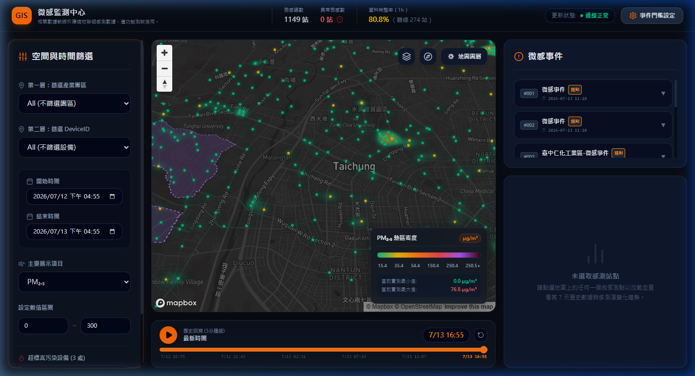
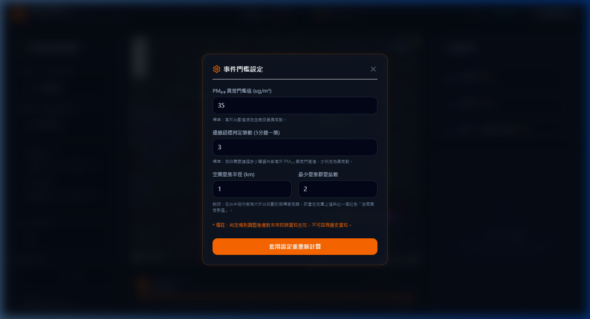

1. 系統主介面佈局功能導覽
登入微感監測系統後，您將看到如圖 1 所示的 3D 地圖與雙側資訊控制面板佈局：

圖 1：微感監測中心 - 主儀表板全景
主要操作區塊功能如下：
- A. 空間與時間篩選欄 (左側)：包含行政區快速飛越選單、特定測站 ID 選取、歷史時間段過濾以及首要展示指標（PM₂.₅/溫度/濕度）切換。
- B. 3D GIS 地圖畫布 (中央)：Mapbox 引擎渲染，負責載入全台中市 1,100+ 測站，並透過顏色與呼吸燈動畫即時顯示超標狀態，背景紫色半透明多邊形為產業園區劃分範圍。
- C. 微感事件列表 (右側)：顯示所有系統判定的超標群聚事件，包含事件所屬園區、時間與關聯之超標測站列表。
- D. 歷史播放器 (底部)：用以拖曳時間軸並以 5 分鐘為刻度動態播放歷史污染擴散。
2. 時間與空間篩選操作步驟
2.1 行政區與工業區快速飛越定位
當您需要聚焦特定區域時，請在左側選單的「第一層：地區或園區」中點選。地圖會平滑飛越至該區域中心（例如點選大里區，地圖相機將自動飛越至大里並自動過濾其他非該區之點位）。
2.2 設定觀測區間與播放
您可以在左側面板中輸入「開始時間」與「結束時間」，然後點選下方歷史播放器的「播放 (Play)」按鈕。此時地圖上的所有測站標記會隨著時間軸跳動，以 5 分鐘為一期重繪顏色與熱區，讓您能夠觀測污染源隨時間移動的擴散路徑。
3. 微感事件之動態標註與警示範圍
3.1 動態產業園區標註與「規則」按鈕
在右側的微感事件面板中，系統會依據點位是否落在 GeoJSON 園區邊界內，動態為事件命名。例如點選 大里產業園區-微感事件，地圖會飛越至大里產業園區並顯著顯示。
點擊事件名稱後方的「規則」按鈕，系統會顯示彈出視窗，條列此事件產生時的參數（如 PM₂.₅ 超標閾值、空間半徑、連續判定筆數等），便於後續法規問責。
3.2 歷史通知 Banner 的關閉 X 與事件範圍解耦操作
💡 重要操作指引 (Banner 關閉解耦)：
選取事件後，地圖上方會滑出橘色通知 Banner（正在檢視歷史事件：...）。
- 點擊橫幅最右側的「X」關閉按鈕：此操作僅會關閉/隱藏上方的橘色橫幅通知（使地圖頂部不受遮擋，方便操作），但地圖上的紅色事件影響範圍圓圈（透明度 0.3 的顯眼圓圈）與時間定位仍會繼續保留在畫面上。
- 點擊橫幅中的「返回即時監測」按鈕：此操作會清除所有選取狀態，隱藏地圖上的紅色警示圈圈，並將時間軸與地圖還原回最新即時時間。
4. 系統門檻設定 Modal 操作說明
點選系統右上角的「事件門檻設定」按鈕，會開啟設定對話框，如圖 2 所示：

圖 2：事件門檻設定模態彈窗
參數設定欄位說明：
- PM₂.₅ 閾值 (µg/m³)：微感器超標的判定基準。
- 連續超標判定筆數：連續超標多少筆數據才算為異常種子點，有效避免雜訊虛報。
- 半徑距離 (公里)：空間聚集分析的最大 Haversine 球面距離。
- 聚集最少站數：此半徑內至少要包含多少個連續超標站點才判定為群聚事件。
修改參數後點擊儲存，後端與前端將重新計算並刷新事件列表與地圖標記。